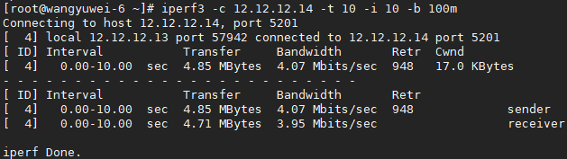

OVS-DPDK QoS 实现
Posted on 2018-09-04(星期二) 15:16 in network
在使用 DPDK datapath 时，可以同时设置入口流量限制和出口流量限制。这些分别称为 QoS 和速率限制。
一、QoS (Egress Policing)
在 OVS-DPDK 环境中配置 QoS，仅在从 vSwitch 上的端口发送的出口流量上进行限制。
使用如下命令查看 OVS port 支持的 QoS 类型。目前 ovs-dpdk 只支持 egress-policer，随着版本更新可能会支持其他的 QoS 类型。
# ovs-appctl -t ovs-vswitchd qos/show-types dpdkvhostuserclient0
QoS type: egress-policer
egress-policer 是 OVS-DPDK 支持的 QoS 类型。
一旦在接口上超过指定的传输速率（由 token bucket 实现），egress policer 就会丢弃数据包。 对于物理设备来说，它将丢弃通过 NIC 从主机传输的流量。 对于虚拟接口来说，即 DPDK vhost-user，它将丢弃从 vSwitch 传输到 guest 虚拟机的流量，也就是限制了该端口上 guest 虚拟机的流量接收速率。
使用如下命令对 dpdkvhostuserclient1 进行配置，将发送速率限制为 10Mbps。10Mbps = 10,000,000bps = 1250000Bps，即 cir 的值大小。
# ovs-vsctl set port dpdkvhostuserclient1 qos=@newqos -- --id=@newqos create qos type=egress-policer other-config:cir=1250000 other-config:cbs=2048
- cir：（Committed Information Rate，承诺信息速率）, 端口允许发送的最大速率，单位为Bytes/s.
- cbs：（Committed Burst Size，承诺突发尺寸），以 bytes 为单位，为令牌桶的容量，即每次突发所允许的最大的流量尺寸。设置的突发尺寸必须大于最大报文长度，即至少要比 MTU 的值大。
使用如下命令查看端口上的 QoS 信息：
# ovs-appctl -t ovs-vswitchd qos/show dpdkvhostuserclient1
使用如下命令从 ovsdb 和 port 上清除 QoS 配置：
# ovs-vsctl destroy QoS dpdkvhostuserclient1 -- clear Port dpdkvhostuserclient1 qos
二、Rate Limiting (Ingress Policing)
与 QoS 功能作用链路相反，Rate limiting 对 vSwitch 上的端口接收的入口流量进行限制。
使用如下命令对 dpdkvhostuserclient0 进行配置，将接收速率限制为 10Mbps.
# ovs-vsctl set interface dpdkvhostuserclient0 ingress_policing_rate=10000 ingress_policing_burst=1000
- ingress_policing_rate: 允许 VM 可发送的最大速率（以Kbps为单位）。对于创建入口流量策略限制，此值是必需的。 如果未指定任何值，则不会修改现有的速率限制配置。
- ingress_policing_burst: 以kb为单位，表示令牌桶的容量。 这个参数最小值应不小于接口的MTU值。 如果未指定任何值，则默认值为 1000 kb。通常设置为 ingress_policing_rate 的 10% 更有利于 tcp 实现全速率。 这是因为 TCP 在丢弃数据包时如果传输交互不好，这会导致数据包重新传输出现问题。
使用如下命令查看端口上的速率限制配置信息：
# ovs-vsctl list interface dpdkvhostuserclient0
使用如下命令清除端口上的速率限制：
# ovs-vsctl set interface dpdkvhostuserclient0 ingress_policing_rate=0
2.1 实验结果
未限速之前：
设置限速到 4Mbps，即 rate 设置为 4000kbps.
ovs-vsctl set interface dpdkvhostuserclient2 ingress_policing_rate=4000 ingress_policing_burst=1000
